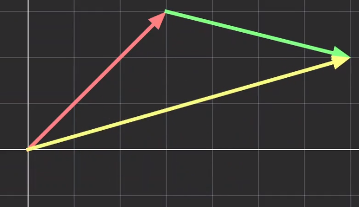
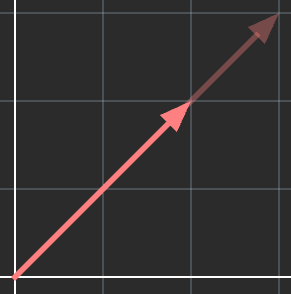
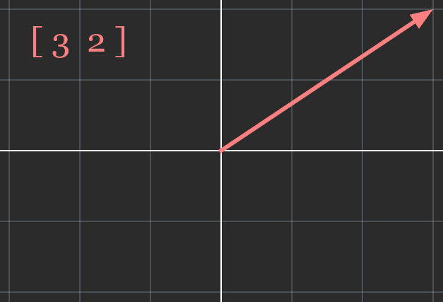
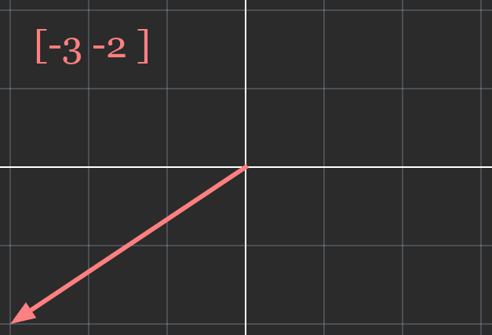

Vectors have a few operations analagous to the basic algebraic operations. In this section we'll primarily look at vector
addition and scalar multiplication as these are key in definiting a vector space.

Vector Addition

Scalar Multiplication
Vector Addition
Vector addition is defined with two vectors of the same dimension.
Geometrically, we can think of it as placing the starting point of one vector at the end point of another vector.
The vector formed between the origin and the new end point would be the sum.
Mathematically, vector addition can be calculated by summing up each corresponding component of the two vectors, and creating a new vector with them.
$$
\vec{a} + \vec{b} =
\begin{bmatrix}
a_{1} + b_{1} & a_{2} + b_{2} & \cdots & a_{n} + b_{n}
\end{bmatrix}
$$
Vector Addition Commutativity
Like ordinary addition, vector addition is commutative, which means that the vectors can be added in any order without affecting the sum.
Vector addition is also associative which means that different groupings of addition don't affect the sum.
The associative law states that \(\vec{a} + (\vec{b} + \vec{c}) = (\vec{a} + \vec{b}) + \vec{c}\)
Vector Addition With Components
Notice how we can construct a vector by summing up its components together.
Ex. \(\begin{bmatrix} 4 \\ -1 \end{bmatrix} = \begin{bmatrix} 4 \\ 0 \end{bmatrix} + \begin{bmatrix} 0 \\ -1 \end{bmatrix}\)
Subsequently, adding two vectors is equivalent to adding each component of those two vectors together.
Scalar Multiplication
Scalar multiplication is defined with one vector and one scalar value.
Geometrically, scalar multiplication changes the magnitude of a vector by a factor of the scalar value. The direction is unchanged
for positive scalars but flipped for negative scalars.
Mathematically, scalar multiplication can be calculated by multiplying each component of the vector with the scalar value.
Multiplying a vector by -1 produces a special result, where the magnitude is the same but the direction is flipped.
This is the negative of a vector, also known as the additive inverse because adding it to its
positive counterpart produces a null vector, a vector with a magnitude of zero \(\begin{bmatrix}0 & 0 & 0\end{bmatrix}\).

These two vectors are negatives of each other.

Vector Subtraction
Vector subtraction is a special case of vector addition. We add the first vector with the negative of the second vector.
Unlike vector addition, vector subtraction is not commutative nor is it associative.
Mathematically, vector subtraction is calculated by taking the difference between each component rather than the sum.
Using the same vectors from the addition examples.
\(
\begin{bmatrix}3 \\ 3\end{bmatrix} -
\begin{bmatrix}4 \\ -1\end{bmatrix} =
\begin{bmatrix}3 - 4 \\ 3 - (-1)\end{bmatrix} =
\begin{bmatrix}-1 \\ 4\end{bmatrix}
\)
As an Aside
Note that we can also perform scalar division by taking the reciprocal of the scalar and multiplying it with the vector.
Because the two main operations are vector addition and scalar multiplication, we won't talk about vector subtraction or scalar
division very much.
It is worth noting that we can multiply two vectors together as well, but since vector multiplication doesn't have a clear
interpretation, there are multiple operations for it.
Summary
The two big operations relating to vectors are vector addition and scalar multiplication. Vector addition combines two vectors by adding up each corresponding component, and creating a new vector with the sums. Scalar multiplication multiplies the magnitude of a vector by a scalar and/or flips its direction. It can be calulated by
multiplying each component with the scalar.
Multiplying a vector by -1 produces a vector with the same magnitude but opposite direction. This is its negative
or additive inverse, and when added with its positive counterpart, the sum is a null vector
(\(\begin{bmatrix}0 & 0 & 0\end{bmatrix}\)). Vector subtraction works by adding the first vector with the negative of the second vector.Next Section →